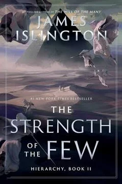

This is a /now page: what I'm spending my time on this month.
Roman Serius
Making
Our-Story: a new daily game. Each day you place events on three timelines (early humans, recorded history, modern history) and score points for getting close. Still on paper: I'm filling the event bank.
Rootedbeta: get from one word to another through words that share a root. Every word you try that it doesn't know helps me grow the list.
Where's Waddle: a daily find-the-penguin game. Drawing pixel penguins and decoy props in Aseprite.
Off the clock
Reading & listening

Reading The Strength of the Few by James Islington Hierarchy, book two